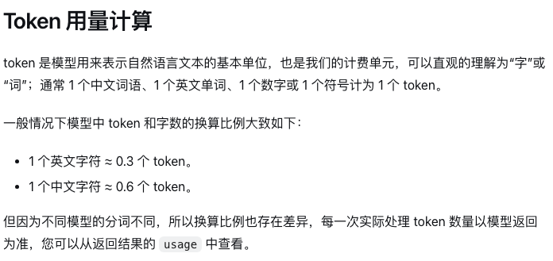

<!doctype html><html lang="zh-CN"><meta charset="utf-8"><title>DeepSeek 分词实测</title>
<style>
*{box-sizing:border-box}body{margin:0;font-family:"PingFang SC","Heiti SC",sans-serif;color:#182d39;background:#f6f4ed}main{width:1120px;background:#f6f4ed;padding:40px}h1,h2,p{margin:0}h1{font-size:43px;letter-spacing:-1px}h2{font-size:26px}small,.model{font:600 18px ui-monospace,monospace;color:#426776}header{display:flex;justify-content:space-between;align-items:baseline;margin-bottom:26px}.panel{padding:22px;background:white;border:1px solid #ced7d4;border-radius:12px}.columns{display:grid;grid-template-columns:1fr 1fr;gap:18px}.source{width:100%;margin:14px 0 20px}.domain,.note{color:#516874;font-size:17px}.quote{font-size:29px;font-weight:650;margin:17px 0}.pieces{display:grid;grid-template-columns:repeat(4,1fr);gap:8px}.piece{background:#ecf4f2;border-top:4px solid #258273;padding:9px 4px;text-align:center;font-size:24px;font-weight:650;border-radius:4px}.piece b,.byte b{display:block;font:550 16px ui-monospace,monospace;color:#466279;margin-top:4px}.piece.space{background:#fff0d4;border-color:#cc842a}.count{display:flex;align-items:baseline;justify-content:space-between;margin:16px 0 0}.count strong{font-size:24px}section+section{margin-top:15px}.rare{font-family:"PingFang SC","Hiragino Sans GB","Songti SC",sans-serif}#decode .panel{padding:18px 22px}.strip{display:grid;grid-template-columns:2fr 1fr;gap:20px;margin-top:16px}.bytes{display:flex;gap:8px}.byte{flex:1;padding:12px 5px;background:#eef1f1;border:2px solid #e0e4e3;text-align:center;color:#72808a;border-radius:5px;font:700 26px ui-monospace,monospace}.active{background:#e2f3e9;border-color:#258273;color:#13584d}.legend{font-size:17px;color:#48646a;margin:3px 0 6px}.out{height:70px;background:#f5f4ed;display:grid;place-items:center;border-radius:5px;font-size:23px;color:#435b65}.out.done{background:#ddf2e6;color:#186747;font-size:48px;font-weight:680}.foot{display:flex;align-items:center;gap:18px;margin-top:15px}.foot button{font:600 16px inherit;font-size:16px;background:#183b48;color:white;border:0;border-radius:5px;padding:8px 13px;cursor:pointer}.pair{display:flex;align-items:center;gap:10px;margin-top:12px;font-size:22px}.pair strong{min-width:105px}.token{background:#edf5f3;border:1px solid #a2cfc6;border-radius:5px;padding:4px 12px;font-size:20px}.token em{font:normal 16px ui-monospace,monospace;color:#415a69}.vocab{background:#e3eff0;padding:15px 22px;border-left:5px solid #1d707c;display:flex;align-items:center;justify-content:space-between}.vocab b{font-size:25px}.vocab span{font-size:20px}.short{font-size:18px}.source + .domain{font-size:15px}#opening{width:1280px}#opening header{margin-bottom:22px}#opening .columns{grid-template-columns:1.06fr 1fr}
.blank{color:transparent;display:inline-block;width:.68em;height:.42em;border:solid #92590f;border-width:0 2px 2px;vertical-align:.04em;margin-right:.06em}</style>
<main id="opening" hidden>
<header><h1>这句话算几个 Token？</h1></header>
<div class="columns"><div class="panel"><h2>DeepSeek 官方用量说明</h2><p class="domain">来源　api-docs.deepseek.com</p></div>
<div class="panel"><p class="model">DeepSeek-V4.1-Flash</p><h2>本地实测 · 仅编码这句话</h2><p class="quote" id="sentence"></p><div class="pieces" id="pieces"></div><div class="count"><span class="note"><span class="blank" aria-label="空格">␠</span> 代表一个空格</span><strong id="count"></strong></div></div></div></main>
<main id="decode" hidden><header><h1>一个「<span class="rare">𠮷</span>」要几个 Token？</h1><span class="model">DeepSeek-V4.1-Flash</span></header>
<section class="panel"><h2>把 4 个 Token 按顺序解码</h2><div class="strip"><div><p class="legend">Token ID ／ 对应的 UTF-8 字节</p><div class="bytes" id="bytes"></div></div><div><p class="legend">解码输出</p><output id="out" class="out rare"></output></div></div>
<div class="foot"><button id="next">读入下一个</button><span id="status" class="note"></span></div></section>
<section class="panel"><h2>常见片段能合成一个 Token 吗？</h2><div id="comparisons"></div></section>
<section class="vocab"><b id="vocab"></b><span>每新增 1 项，嵌入表和输出层各多 1 行</span></section></main>
<script type="module">
const data=await fetch('results.json').then(r=>r.json());
const byId=id=>document.getElementById(id);
const sentence='王二讲 Agent 开源了吗？';
const example=data.samples[sentence];
byId('sentence').textContent=sentence;
byId('pieces').innerHTML=example.ids.map((id,i)=>{
  const part=example.parts[i];
  return '<div class="piece '+(part.includes(' ')?'space':'')+'">'+part.replaceAll(' ','<span class="blank" aria-label="空格">␠</span>')+'<b>'+id+'</b></div>';
}).join('');
byId('count').textContent=example.ids.length+' 个 Token';
const rare=data.samples['𠮷'];
byId('bytes').innerHTML=rare.ids.map((id,i)=>'<div class="byte">'+id+'<b>'+rare.utf8[i].toString(16).toUpperCase()+'</b></div>').join('');
byId('comparisons').innerHTML=['人工智能','大模型'].map(word=>{
  const sample=data.samples[word];
  return '<div class="pair"><strong>'+word+'</strong>→ '+sample.ids.map((id,i)=>'<span class="token">'+sample.parts[i]+' <em>'+id+'</em></span>').join('')+'<small>'+sample.ids.length+' 个 Token</small></div>';
}).join('');
byId('vocab').textContent='BPE 基础词表　'+data.base_vocab.toLocaleString('en-US')+' 项';
let count=0;
function render(){
  const decoded=new TextDecoder('utf-8',{fatal:true}).decode(Uint8Array.from(rare.utf8.slice(0,count)),{stream:count<rare.utf8.length});
  if(count===rare.ids.length && decoded!==rare.decoded) throw Error('解码不一致');
  [...byId('bytes').children].forEach((el,i)=>el.classList.toggle('active',i<count));
  byId('out').classList.toggle('done',Boolean(decoded));
  byId('out').textContent=decoded || (count?'等待后续字节':'尚未读入');
  byId('status').textContent='已读入 '+count+' / '+rare.ids.length+' 个 Token';
  byId('next').textContent=count===rare.ids.length?'重新开始':'读入下一个';
}
byId('next').onclick=()=>{count=(count+1)%(rare.ids.length+1);render()};
render();
const target=location.hash==='#decode'?'decode':'opening';
byId(target).hidden=false;
</script></html>
